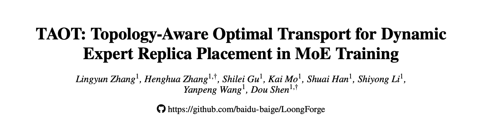
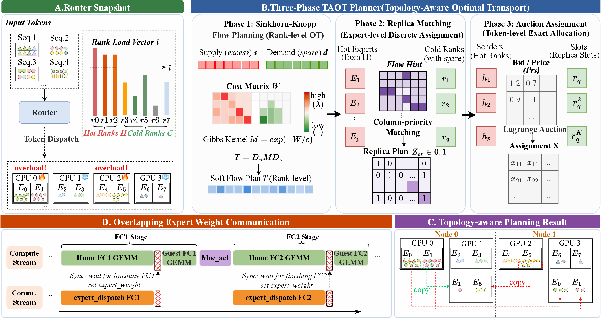
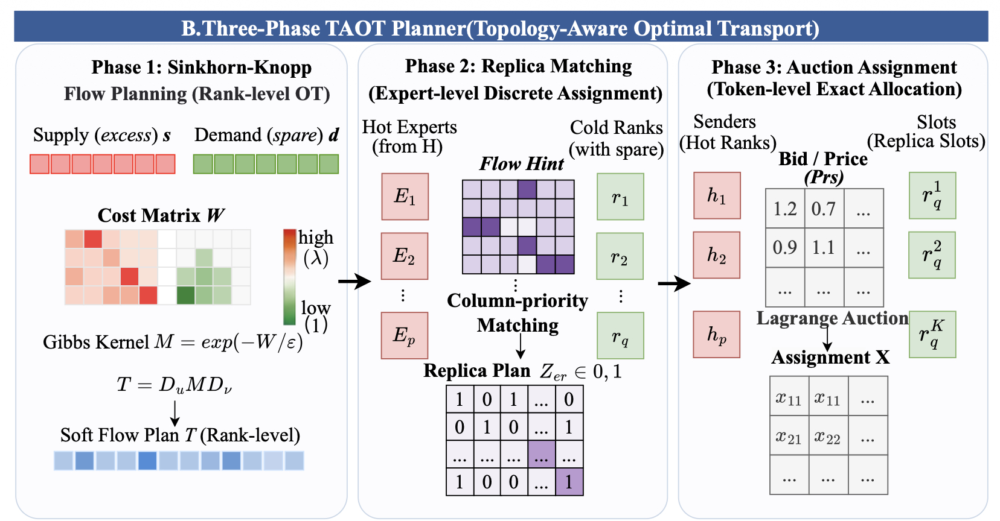
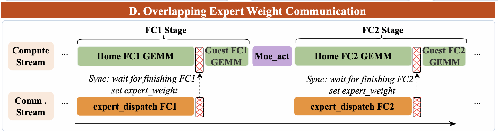
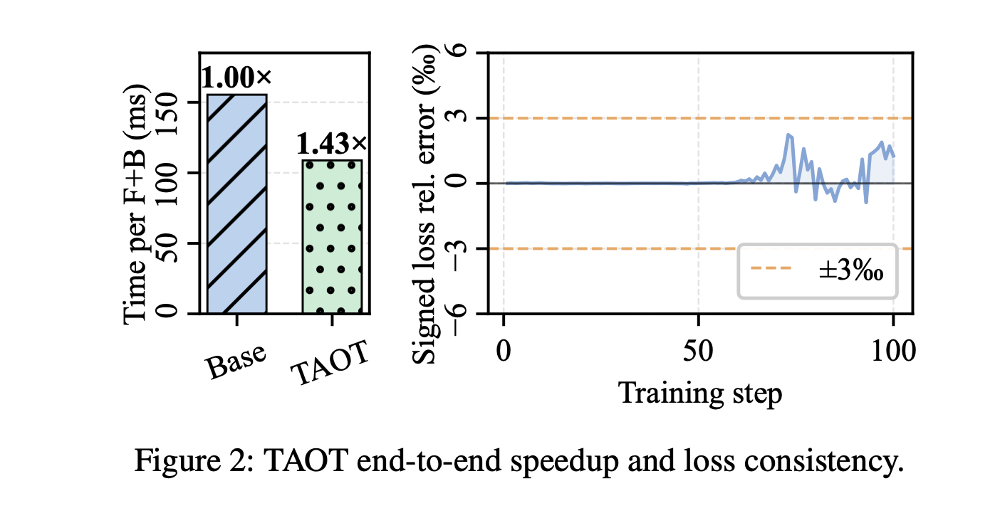
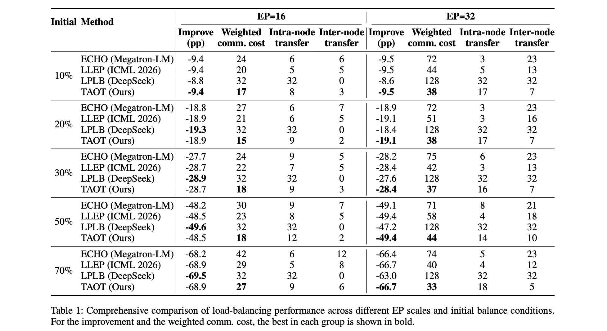
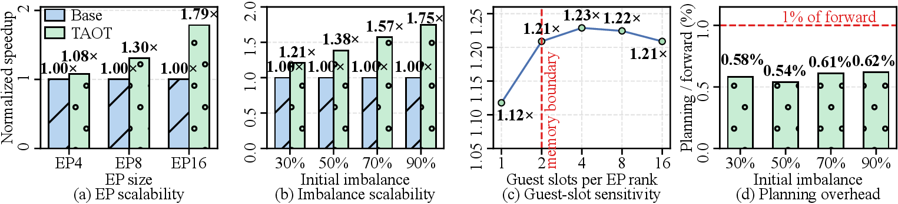
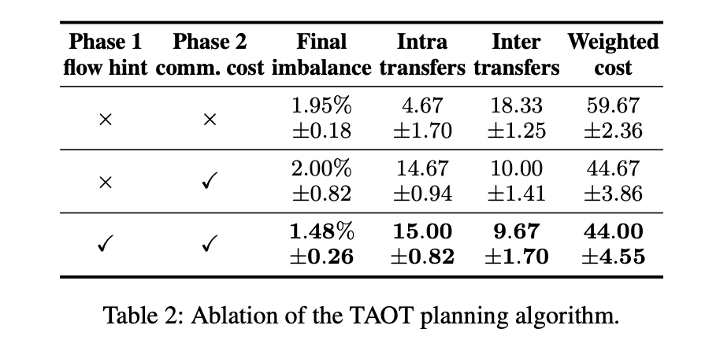

MoE 训练端到端加速 1.43 倍：LoongForge 基于拓扑感知最优传输重新定义 EP 专家负载均衡
MoE 已经成为前沿大模型的默认架构，而新一代模型的方向更明确：专家越来越多、激活越来越稀疏。DeepSeek-V4-Pro 每层路由专家从 V3 的 256 个增加到 384 个，每 token 激活的专家数反而从 8 个降到 6 个。
这种结构上的收益，代价是把复杂度转移到了训练系统。每张卡要处理多少 token 完全取决于路由结果，而专家越多越细，路由的长尾就越难预测。一旦某几个专家成为热点，token 就会集中到承载它们的 rank 上，拉长整步耗时，其他 rank 即使提前算完也只能等待。
所以在我们的实践里，MoE 训练慢，症结往往不在"卡不够快"或者"网络不够宽"，而在于负载能否被及时调平。
业界很早就想到一个直接的办法：把热点专家的权重临时复制一份到某个空闲 rank 上，让空闲卡帮忙分担一部分 token 计算。FasterMoE、Megatron 里的 Echo、DeepSeek 的 LPLB，还有最新 ICML 2026 中的工作 LLEP，都是这个思路的代表。
这个思路在单机范围内很自然，机内卡间走 NVLink，把权重挪到哪张空闲卡上，代价差别不大。但新一代模型的规模已经让 EP 域必须跨机：几百个专家的权重要靠专家并行摊开，NVIDIA 给 V4-Pro 的参考训练配置就需要 EP64、跨 64 节点共 512 张 H100。一旦 EP 域跨出单机，"复制到哪张空闲卡"就不再等价，机内是 NVLink，跨机要走 InfiniBand，搬运一份热点专家权重的代价可以差出一个量级。
我们看到的问题是：这些方案大多只盯着一件事——"把负载摊得越平越好"，默认空闲容量是同质资源，一张空闲卡和另一张空闲卡没什么区别。结果就是，专家权重有没有被搬到别的节点去，成了通信开销的主导因素——两个负载均衡质量几乎一样的方案，实际开销可能天差地别。
换句话说，副本放置不能只看"哪里空"，还要看"搬过去的代价有多高"。
基于这个判断，我们把这项工作整理成了一篇论文，发布在 arXiv 上：《TAOT: Topology-Aware Optimal Transport for Dynamic Expert Replica Placement in MoE Training》（arXiv:2608.03676）。我们提出的 TAOT（Topology-Aware Optimal Transport），首次把"削峰收益"和"跨节点搬权重的代价"同时纳入优化目标，用最优传输（Optimal Transport）来决定每个热点专家的副本应该落在哪张卡上：在优化中直接表达优先机内、必要时跨机的权衡，更适合 micro-batch 级动态热点的多节点 EP 场景。

1. 为什么我们认为只看负载均衡还不够
先看一个典型的副本机制：在负载轻的 rank 上预留几个空 slot（论文里我们叫 guest slot），把热点专家的权重临时拷进去，让这张轻载卡接手一部分 token 的计算——路由目标不变，只是计算换了个地方发生。
关键在于拷到哪张卡。现有策略通常只优化"最佳负载均衡"，把所有空闲 slot 当成一模一样的资源。但同节点内的 NVLink 和跨节点的 IB/RDMA，有效带宽和代价并不是一个量级。于是两个削峰效果几乎相同的方案，只因为一个把权重留在了节点内、另一个搬去了隔壁节点，端到端的通信成本就能差出一大截。
跟 TAOT 最接近的工作是 DeepSeek 的 LPLB。它把 token 到空闲 slot 的分配建模成一个线性规划，但用 Cube、Hypercube、Torus 这类预定义图结构去限制副本的通信路径。这在小规模、热点恰好落在图的相邻边上时很好用；可一旦 EP 规模变大、或者热点跟固定拓扑对不上，热点附近的容量很快被用完，远处的空闲 rank 又被图结构挡在可行域之外，整体调度空间就会明显收缩。
我们的思路是反过来：不再依赖固定拓扑图，而是用一个连续的通信代价矩阵加上软性的拓扑偏好。就近放是首选，但节点内实在放不下时，跨节点仍然是"代价更高的合法选项"，而不是被一刀切掉。这更贴近我们在真实多节点 EP 中观察到的、逐 microbatch 波动的热点分布。

2. 三阶段规划：从"往哪流"到"谁发多少"
如果直接联合求解"均衡"和"通信代价"两个目标，问题规模会随 EP 度数迅速扩大。我们把它拆成如下图所示三个环环相扣、逐级细化的阶段。

Phase 1：Sinkhorn-Knopp 拓扑感知流规划（rank 级）。 我们把每个 rank 的过载量当作"供给"、空闲容量当作"需求"，在拓扑代价矩阵
W 下求一个最优传输方案——本质上是在回答：从全局看，哪些热点 rank 的过载，应该转移到哪些冷 rank 才更划算。原始 OT 要跑线性规划，在 GPU
上不好实现；加入负熵正则项松弛之后，最优解会形成 Gibbs 核结构：
T = diag(u) · M · diag(v)只需交替做几轮 Sinkhorn-Knopp 的 GEMV 迭代就能算出来，对 GPU 实现更友好。当我们把正则系数取成跨节点代价
λ 时，节点内与跨节点的核值之比正好大于 1——这就是"软拓扑偏好"的数学来源：不禁止跨节点，只是让跨节点选择承担更高代价。
Phase 2：列优先迭代匹配（专家级）。 Phase 1 给的是连续的流参考，但副本放置最终是整数决策：每张冷 rank 最多放 K 个完整副本，还可能有好几张冷 rank 同时选择同一个热点专家。这一阶段我们给每个"(冷 rank, 热专家)"配对打一个三级分数——主项是这一 match 能转移多少 token（均衡收益），第二项是拓扑偏好，第三项才是 Phase 1 的 OT 流提示（只在打平时作为全局参考）。这里的关键取舍在于：如果按专家做外层循环（行优先），重载专家会倾向于先占满 slot，轻载 rank 得不到足够调度机会，我们实测残余不均衡可能达到 7–10%。改成站在冷 rank 视角的列优先匹配后：每轮每张冷 rank 独立选择最合适的专家，冲突时再仲裁，未命中的 rank 进入下一轮选择，残余不均衡被压到了 1–2%。
Phase 3：拉格朗日拍卖 token 分配（token 级）。 Phase 2 定下了"专家 e 计划给 slot s 分多少 token"，但 e 的 token 其实散在好几个 rank 上，还需要计算每个源 rank 各发送多少。直接按比例切分会带来浮点截断误差，也没有利用拓扑信息。我们给每个 rank 的容量约束引入一个拉格朗日乘子（价格）：每轮每个 slot 按"拓扑收益减当前价格"的净收益竞价，中标的 rank 价格随之上涨、下一轮竞争力自然衰减。这样既把拓扑偏好纳入分配，又让负载分布更均匀，而且固定迭代次数、天然兼容 CUDA Graph。
3. 在线规划不能成为新瓶颈：我们把几百次 kernel 融成几次
三阶段规划并不轻量，涉及最优传输、列优先匹配和拍卖竞价。但 TAOT 需要逐 microbatch 实时运行：如果规划本身开销过高，通信侧节省下来的收益很容易被抵消。所以要让规划耗时不到单次前反向（F+B）耗时的 1%，靠的不只是算法设计，还有一层容易被忽略的算子级工程。
问题主要出在小规模配置上。EP8、EP16 这种配置下，规划的实际 GPU 计算量本就很小，可原始 PyTorch 写法每调用一次都会触发大量小 kernel：重建张量、运行 50 轮 Sinkhorn、循环 K 轮 Phase 2，加起来有几百次 launch——host 端的启动开销远远超过了 GPU 真正计算的时间，规划器本身就可能成为新的瓶颈。
我们用 Triton 重写了这套逻辑，从三个方向把这几百次 launch 降了下来：
- 静态张量缓存。 拓扑代价矩阵
M、每个专家的 home rank、拓扑偏好这些量，只跟拓扑配置（R、E、每节点卡数、跨节点代价）有关，跟 token 怎么分无关，在整个训练过程中保持不变。原始实现每次都重新构建，会额外产生约 15 次 kernel launch。我们把它们缓存进一个进程级字典，首次之后直接命中，这 15 次 launch 就可以省掉。 - Phase 1 单 CTA Sinkhorn kernel。 50 轮 Sinkhorn-Knopp 原本是 50 次
torch.mv+ clamp、共约 150 次 launch。因为 R ≤ 64，整个M、u、v都塞得进寄存器，于是我们把 50 次迭代整个塞进单个 CTA、编译期完全展开——150 次 launch 变 1 次，中途还没有 CPU-GPU 同步。 - Phase 2 的 K 轮融合。 把 K 轮分配融成一次 launch，
used[E,R]掩码全程保存在寄存器里、跨轮不回写显存，直到最后才落盘。这里有个反直觉的取舍：内层那 R 次迭代我们故意不做编译期展开——展开会让[E,R]临时张量按 R 倍复制，EP16 下寄存器直接爆、SM 占用率崩盘；改用动态循环反而让编译器跨轮复用寄存器，占用率明显回升。
算法决定规划质量，算子优化决定它能否在逐 microbatch 场景下实时执行。两者结合后，TAOT 在获得更好均衡效果的同时，把在线规划开销控制在前向时间的 1% 以内。
4. 光规划完还不够，通信开销还得藏起来
把跨节点通信降下来之后，我们还多走了一步：把优化后的 guest 专家权重分发这点开销，如下图所示直接藏进同一张卡上 home 专家的计算里。

反向阶段同理：guest 专家算出的权重梯度，通过一次反向 All-to-All 送回 home rank 累加。这样 guest 专家机制引入的额外通信，基本被计算掩盖掉了。
5. 实测结果：训练更快，通信更省
① 端到端：加速 1.43×，精度不受影响

加速来自更好的负载均衡加上被有效隐藏的专家通信，不是靠牺牲数值精度换来的。guest 专家这条路径既没改变 token 的目标专家语义，反向时 guest 梯度也如实回传、累加到了 home 专家上。
② 均衡质量 + 通信代价：两个维度分开看

这里我们没有把两个指标合成一个总分——因为端到端里专家通信和计算大约是 1:7 的比例，两个方案哪怕不均衡度只差 1pp，大约 7% 的通信下降就能抵消计算长尾的代价；而且 EP 越大、每张卡的计算窗口越短、通信占比越高，这个临界值还会继续下探。因此把均衡质量和通信代价分开呈现，更便于判断不同方案的真实取舍。
- 均衡质量：EP=16 时 TAOT 稳居次优，只比 LPLB 落后约 1pp，但用这 1pp 换来了对端到端更有价值的通信下降；EP=32 时反超，全部场景最优或并列最优。LPLB 从 EP=16 到 EP=32 明显退化——因为 Torus 4×8 把迁移路径限制在相邻边上，规模一大、热点被拆散，附近容量先被用完，远处空闲卡又无法参与调度。我们的软偏好正好相反：EP 越大、低载 rank 越多，卸载候选空间反而越大。
- 通信代价：TAOT 在全部十种配置里都是最低。EP=16 时是 15–27，比 LPLB 固定的 32 最多低 53%；EP=32 时是 33–44，比 ECHO 最多低 55%，比 LPLB 最多低 74%。跟 LLEP 的对比还说明了一件事——同样的目标不均衡度，不代表同样的通信效率：70% + EP=32 下，TAOT 的代价为 33、LLEP 为 40，差别就在于我们把节点内/跨节点代价直接写进了放置决策，优先使用通信代价更低的容量。
③ 扩展性与开销：规模越大、初始不均衡越高，收益越明显

三个趋势很清楚：EP 规模越大，加速越明显（更大的并行域提供了更丰富的全局空闲容量）；初始越不均衡，加速越明显（热点长尾越长，guest 机制可分担的负载越多）；而在线开销始终压在前向的 1% 以下，不随不均衡度线性增长——开销足够低，可以逐 microbatch 使用，也不容易演变成新的瓶颈。
④ 消融：两个组件各司其职，缺一不可

在 EP=32、初始不均衡 70% 下，我们把 Phase 1 的流提示和 Phase 2 的通信代价建模当两个开关：
- 只加 Phase 2，跨节点传输从 18.33 次降到 10.00 次、加权代价从 59.67 降到 44.67，而不均衡度稳在约 2%——说明它优先把副本放在节点内，同时保住了削峰能力；
- 再叠上 Phase 1，不均衡度从 2.00% 进一步降到 1.48%，通信代价也跟着降——rank 级流提示作为全局参考，避免了列优先匹配局部贪心带来的不合理路径。
两者配合，形成了更好的"均衡-通信"权衡。
6. 我们想补上的，是 MoE 均衡中被低估的一环
把 TAOT 放回整个 MoE 负载均衡的版图里，它的位置就比较清楚了。
这些年，MoE 均衡研究覆盖了策略切换（SmartMoE）、容量预测（EfficientMoE、DynamicMoE）、专家复制（FasterMoE、Echo、LLEP）、专家重布局等等——但还少有方案把"削峰收益"和"搬权重的代价"同时写进目标函数。有的依赖固定复杂的通信范式（LAER-MoE），有的把均衡锁定在单节点内（FEPLB 靠 Hopper 的 NVLink Copy Engine），有的用硬拓扑图约束路径（LPLB）。
我们面向的是更通用的标准 EP 场景：不依赖特殊硬件、不锁死在节点内、不用预定义图，而是用连续代价矩阵和软拓扑偏好，把"优先节点内放置、必要时再跨节点"这个权衡，直接表达在优化目标里。它补上的正是这块一直被低估、却对端到端成本至关重要的问题——副本放哪，从来不只是"哪里空"的问题。
对于专家数和 EP 规模还在持续扩大的 MoE 训练来说，我们相信这种把拓扑纳入考量的实时副本规划，很可能会从单点优化走向更基础的系统能力。问题也随之变成：它能不能稳定地进入训练框架，让用户可以在真实训练任务中直接启用。
7. 从论文方法，到框架里的可用能力
如果只看论文，TAOT 是一套"专家副本该放哪"的规划方法；放到真实训练系统里，它还需要拓扑信息、在线求解、权重分发、计算通信重叠和训练入口协同起来。也正因为如此，我们没有把 TAOT 做成一段单独算法，而是作为 MoE 专家机制的扩展，把它沉淀进了我们开源的多模态训练框架 LoongForge。
🔗 LoongForge 开源地址：https://github.com/baidu-baige/LoongForge
LoongForge 由百度百舸 AIAK-Training-LLM 训练加速套件演进而来。开源之前，它已在大语言模型、计算机视觉和具身智能等方向为企业客户提供生产级训练支持，通常比客户基线提速 30%~50%，最大的生产任务规模超过 5000 卡 XPU。我们面向的是更通用的训练工程问题：用一套框架覆盖 LLM、VLM、VLA、Diffusion 等不同场景，贯通预训练到 SFT 的主流流程，同时在 GPU 与昆仑芯 XPU 平台、数千卡规模集群和多类真实的业务场景中完成了长期验证。
要同时把这几类模型都跑快，靠单一引擎并不现实。我们的做法是按模态分成两条后端栈：LLM / VLM / Diffusion 跑在深度定制过的 Megatron-LM 上，充分利用其成熟的 TP/PP/EP/CP 并行体系；而 VLA、世界-动作模型（WAM）这类具身模型则与 Megatron 解耦，走 torch 原生的 DDP / ZeRO-1 / FSDP / HSDP 栈——这类模型参数量不大、但动作头与多视角输入结构复杂，用原生栈反而更灵活。两条栈各自做了深度优化，目标都是超过各自领域的主流开源基线。TAOT 正是沉淀在前一条栈上的一项优化：你不需要自己复现论文里的三阶段规划器，遇到专家负载倾斜和跨节点通信瓶颈时，在配置里开启即可。
而在"跑得快"之外，框架还要解决"接得快"。LoongForge 已内置 20 多个模型族、近 40 个具体模型的标准组件，覆盖 DeepSeek-V3/V4、Qwen3/Qwen3-Next、GLM-5、MiniMax、MIMO 等 LLM，Qwen3-VL、InternVL3.5、LLaVA-OneVision-1.5、ERNIE4.5-VL、Kimi-K2.5 等 VLM，Wan2.1/2.2、Qwen-Image 等扩散模型，以及 Pi0.5、GR00T-N1.6/N1.7、xVLA、FastWAM、LingBot-VA 等具身模型；模型层被拆解为 Encoder、Foundation 和组合调度等抽象，ViT 与 LLM 组件可以自由替换，很多适配工作可以通过 YAML 完成模块拼接与策略配置——接入一个新模型时，不必重新搭一套训练工程。
如果你正在做大规模 MoE 训练，训练被少数热点专家拖住长尾，欢迎试一试 LoongForge，也欢迎通过 GitHub Issue 与我们交流。